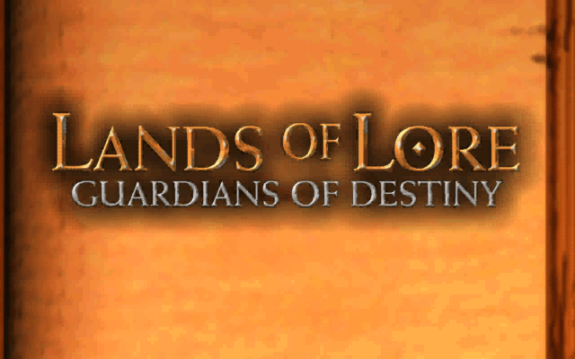
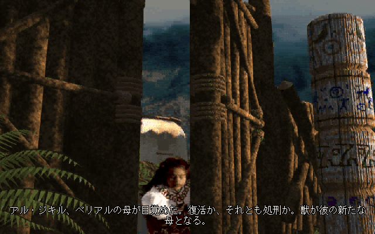
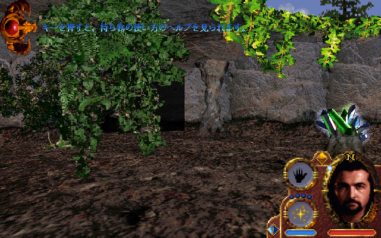
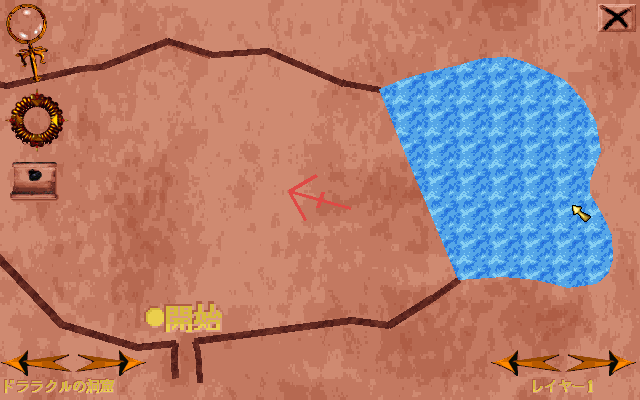
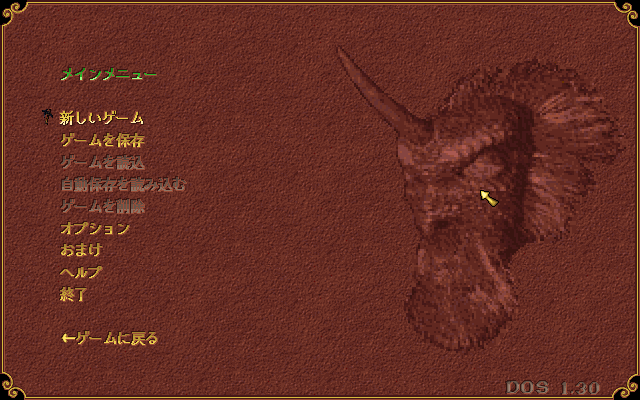
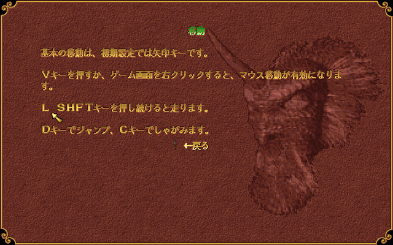

どんなゲーム？
ランズ・オブ・ロア2 は、1997年にウエストウッド・スタジオが発表したロールプレイングゲームです。
主人公ルーサーは、第1作で王国を脅かした魔女スコシアの息子。母の罪を問われて捕らわれたうえ、獣やトカゲの姿へ勝手に変わってしまう呪いに苦しんでいます。 呪いを解く手がかりを求めて牢を抜け出したルーサーは、ドララクルの洞窟、ヒューラインの森、ドラコイドの古い都をめぐる長い旅に出ます。
画面は立体の一人称視点で、実写の動画と、ほとんど全部の台詞に付いた声で物語が進みます。
Lands of Lore: Guardians of Destiny
GOG.com 版の「Lands of Lore: Guardians of Destiny」（DOS 版）を日本語で遊べるようにする、非公式のファンメイドMODです。 人物の台詞や語り、実写の動画の会話に日本語の字幕を付けます。メニューや設定の画面、ヘルプ、自動地図の文字も日本語にしています。 声は英語のままで、画面の下に日本語の字幕が出ます。 ゲームのフォルダにファイルを 1 つ置くだけで日本語になり、外せば英語に戻ります。
ランズ・オブ・ロア2 は、1997年にウエストウッド・スタジオが発表したロールプレイングゲームです。
主人公ルーサーは、第1作で王国を脅かした魔女スコシアの息子。母の罪を問われて捕らわれたうえ、獣やトカゲの姿へ勝手に変わってしまう呪いに苦しんでいます。 呪いを解く手がかりを求めて牢を抜け出したルーサーは、ドララクルの洞窟、ヒューラインの森、ドラコイドの古い都をめぐる長い旅に出ます。
画面は立体の一人称視点で、実写の動画と、ほとんど全部の台詞に付いた声で物語が進みます。






LandsOfLore2_JP.zip の中身を、ゲームのフォルダ（LOLG.EXE があるフォルダ）にそのまま展開します。DOSBOX フォルダに、winmm.dll が増えれば完了です。元からあるファイルを上書きすることはありません。ゲームのファイルは書き換えません。
DOSBOX フォルダから winmm.dll を消します。セーブデータは英語版と共通です。日本語版と英語版を行き来しても、続きから遊べます。
誤訳や不自然な訳に気づいたら、GitHub の Issues で教えてください。